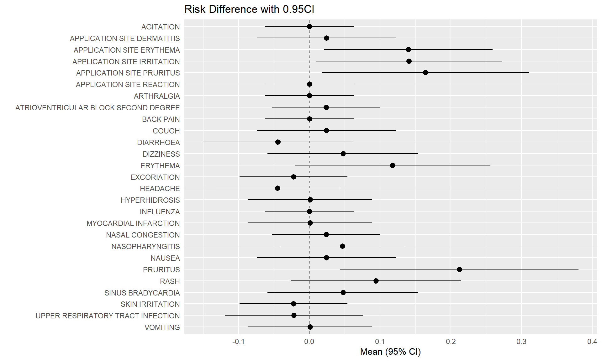
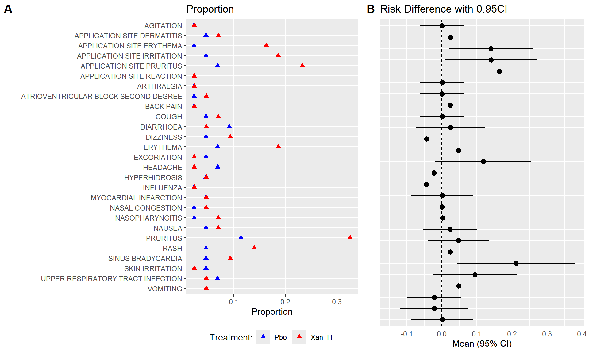
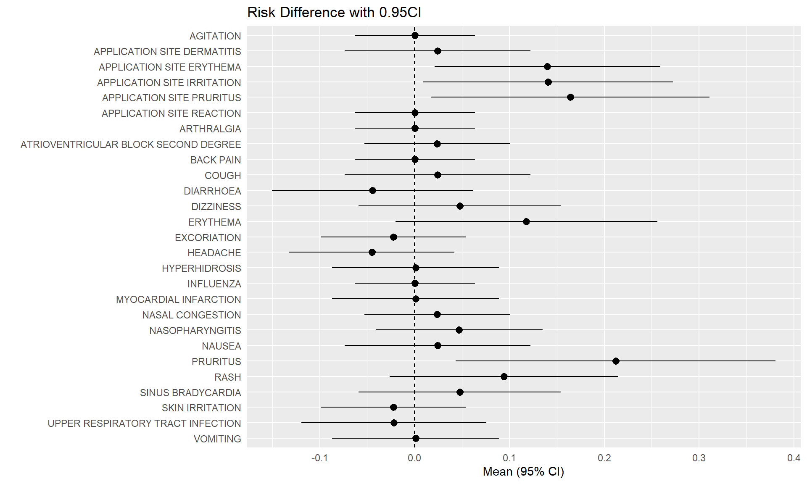
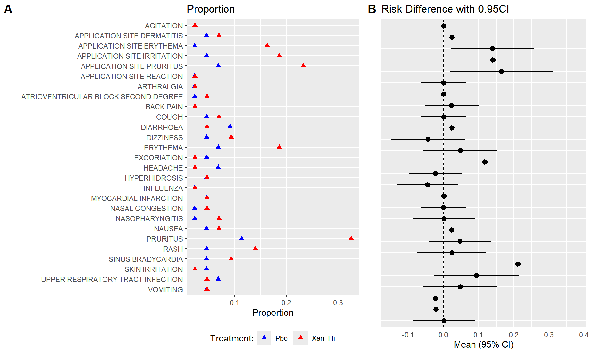
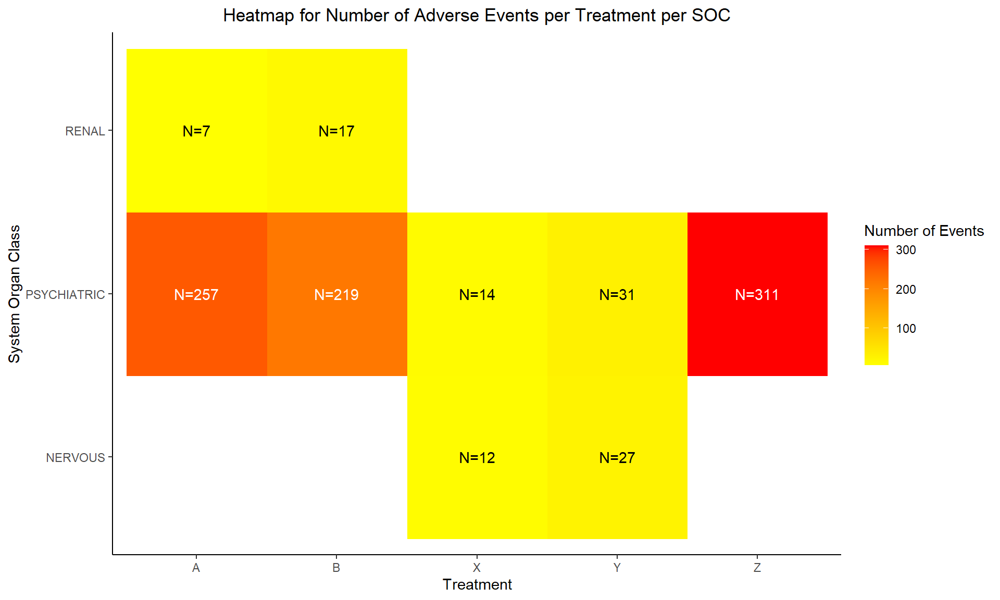
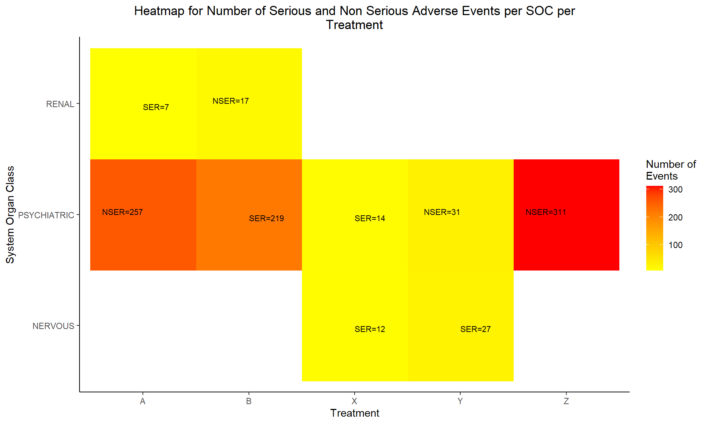
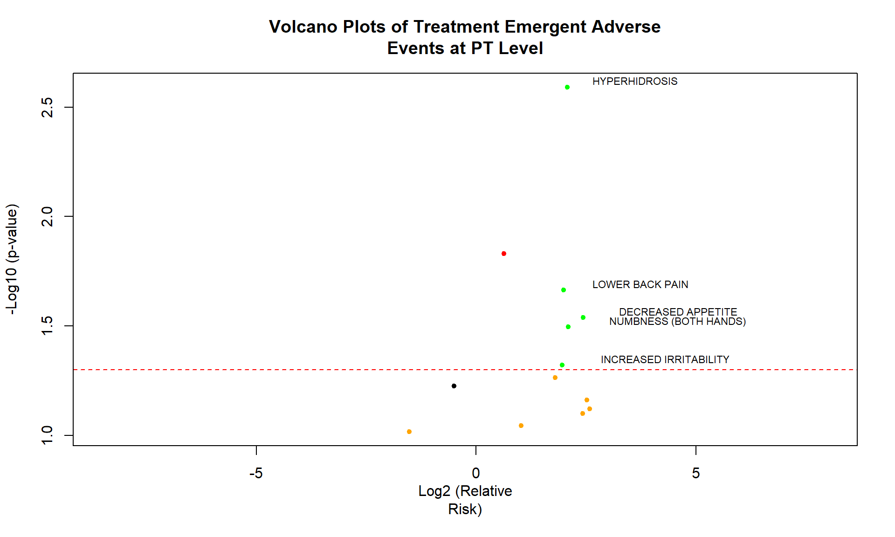
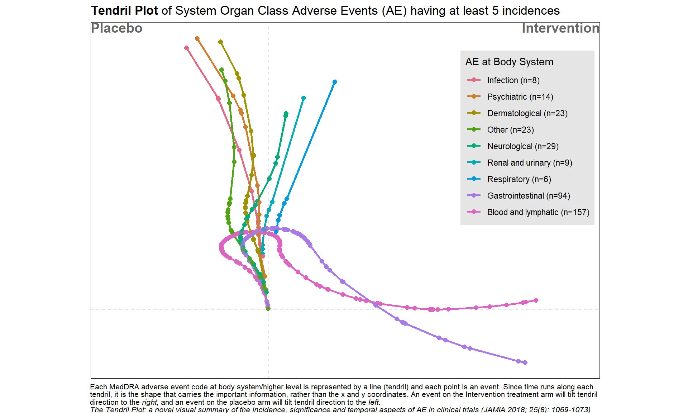
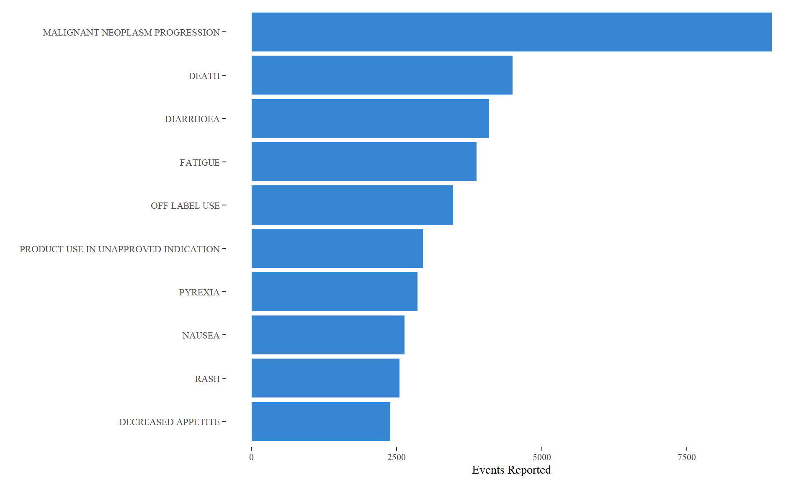

Analysis of Adverse Event
Statistical Analysis of AEs
Efficacy and safety are two crucial aspects of assessing the risk-benefit ratio of a drug. When a drug’s efficacy meets the regulatory requirements, its safety profile must also be within a reasonable range. However, clinical trials sometimes reveal peculiar adverse reactions that attract regulatory attention, such as immune-related adverse events (irAEs) from PD-1/L1 inhibitors, bone damage from BTK inhibitors, and bleeding events from EGFR inhibitors. In such cases, sponsors are often required to conduct more in-depth analyses to clarify the drug’s safety. Based on past clinical trial experiences and literature, here have summarized some analytical methods for adverse events that sponsors and regulatory bodies might require for your reference.
Incidence
Calculating the incidence rate is a fundamental requirement for AE analysis. This includes overall incidence rates, incidence by preferred terms (PT), standard of care (SOC), and by severity levels, including AEs that lead to drug discontinuation, interruption of treatment, or death.
Time to Occurrence and Duration
The time from drug administration to the occurrence of an AE and the duration of the AE are two important dimensions of AE analysis. If an AE persists, it indicates that this type of AE tends to last long clinically and may require the sponsor to explain how to manage and ensure safety, especially for AEs of grade 3 or higher, which are of greater concern. The following table displays a common summary format:
 Source: John Shaik et al., PharmaSUG 2016.
Source: John Shaik et al., PharmaSUG 2016.
The figure below demonstrates the use of Kaplan-Meier (KM) curves to analyze the occurrence of AEs.
 Source:
Kriss Harris et al., PhUSE 2017
Source:
Kriss Harris et al., PhUSE 2017
Temporal Distribution of AEs
Analyzing the patterns of AE occurrence over different time periods. For example, although an AE may occur rapidly, it might disappear quickly or be transient, thus having a minimal impact. If a certain type of AE continues throughout the medication period and is of a higher CTCAE grade, it is likely drug-related and clinical considerations for management are necessary.
The following figure shows the distribution over time of three types of AEs in melanoma patients treated with Nivo+Ipi. It can be observed that most skin-related AEs cease to appear after 3 months, and GI and liver-related AEs significantly decrease after 6 months.

Outcome Summary of Adverse Events (AEs)
The outcome of an AE represents whether interventions against the AE are effective. If there is no recovery, the duration of the AE will be prolonged, indicating that effective intervention for this type of AE is challenging.
Analysis of Factors Influencing AEs
If the AEs in the experimental group are particularly prominent (e.g., significantly more bleeding events or a higher mortality rate in the experimental group compared to controls), regulatory bodies often require an analysis of influencing factors. If clinical influencing factors can be identified, measures can be taken to control them, also indicating that the AEs are predictable.
Sometimes, to reduce the bias due to timing in between-group comparisons, a landmark analysis strategy might be used, which excludes patients who stopped treatment or died prematurely. For example, patients who terminated treatment or died within two months may be excluded.
Hazard Ratio (HR) of AE Occurrence
This is also a method for analyzing differences in AE characteristics between two groups, using survival analysis to study the hazard ratio of AE occurrence. The figure below shows the risk of irAEs in the Keynote-054 study comparing Drug K with a placebo (HR = 5.0), indicating that the risk of irAEs is significantly higher in the experimental group.

AE Visualization
Relative Risk/Forest Plot
 

Heat Map
Using a heatmap to display adverse event (AE) co-occurrence can be an effective visual tool in medical research to identify and analyze patterns of symptoms or side effects that frequently appear together.
Heat maps are charts with values being represented by colors. The intensity of the color is an indication of the number i.e. higher the value more intense will be the color.
HEAT MAP FOR NUMBER OF ADVERSE EVENTS PER TREATMENT PER SYSTEM ORGAN CLASS (SOC):
A heat map can be generated to visualize the number of adverse events recorded per SOC per treatment. We will plot the treatments on x-axis and the SOCs on y-axis. Each tile of the heat map will be colored as per the number of events recorded for that particular combination. The color of the tile will vary from yellow to red, with low counts shown in yellow and high counts in red. The tiles with white color denote the absence of events for a particular combination of SOC and treatment. The number of events will be printed in either black or white as per a predefined threshold; counts below or equal to the threshold will be printed in black, remaining will be in white.
In this plot, we are able to see the number of events reported for every SOC for all 5 arms. As seen in the legend, tiles with count less than 100 are yellow with varying intensity as per the actual count for that tile. For e.g. if we check the number of adverse events in the gastrointestinal system for treatments X and Y, the count is 11 and 26 respectively. The color of the tile for Y is deeper than the tile for X. The color starts changing from yellow to orange and then to red as the number of events increases. This is observed in the “Psychiatric” SOC counts, with 31 events Y has a yellow tile, 257 events lead to treatment A having an orange tile and the treatment Z has a red tile due to the 311 events reported. Here the threshold for number of events has been set to 100. We can quickly identify the SOCs with number of events greater than 100 as they are printed in white. We can observe white tiles for SOCs with no events for a particular treatment like Reproductive system and treatment X.


HEAT MAP FOR NUMBER OF SERIOUS AND NON SERIOUS ADVERSE EVENTS PER SOC PER TREATMENT
The adverse events are classified as either ‘Non Serious’ or ‘Serious’. We can plot the number of serious and non serious events occurring per SOC per treatment as shown in the heat map below. In this plot, both the counts will be displayed in the same tile and the color of the tile will be decided by the maximum of the number of events if both events are present.

HEAT MAP FOR NUMBER OF ADVERSE EVENTS PER TREATMENT PER PREFERRED TERM (PT) FOR A SINGLE SOC
As mentioned earlier, we can analyze the psychiatric disorders further by generating a heat map of the events reported under this SOC for all treatments. We will generate a heat map of all PTs with number of reported events greater than 10.


HEAT MAP FOR NUMBER OF ADVERSE EVENTS OF PTS OF A SINGLE SOC OF A SINGLE TREATMENT PER SEVERITY
We can check the severity of all the PTs for a single SOC for a single treatment. Let us analyze the Psychiatric Disorder PTs reported for treatment Z. We will plot the number of events reported for PTs against their severity which will have the value as Mild, Moderate or Severe

HEAT MAP FOR NUMBER OF RELATED AND NOT RELATED ADVERSE EVENTS PER PT PER SEVERITY FOR A SINGLE TREATMENT
We can check the causality of the events reported in the above plot along with their severity. Let us once again consider the psychiatry PTs reported for treatment Z. We will plot the number of events reported for PTs with their causality which will have values as ‘Related’ or ‘Not Related’ against severity

Volcano Plot
A volcano plot is a type of scatter-plot that is used to quickly identify changes in large data sets composed of replicate data. It plots significance versus fold-change on the y and x axes, respectively. It is constructed by plotting the negative log of the p value on the y axis (usually base 10). This results in data points with low p values (highly significant) appearing toward the top of the plot. The x axis is the log of the fold change between the two conditions. The log of the fold change is used so that changes in both directions appear equidistant from the center. In the clinical domain, a volcano plot is used to view Risk Difference (RD), Relative Risk or Odds Ratio of AE occurrence between the treatment groups by preferred term.
VOLCANO PLOT OF TREATMENT EMERGENT ADVERSE EVENT AT PT LEVEL
Volcano plots are also generated on the same data which is used for heat maps. Here, we have plotted negative log10-transformed p-value calculated using Fisher exact test on Y-axis and Log2-transformed relative risk on x-axis.
The dashed red line on y-axis shows where p = 0.05 with points above the line having p < 0.05 and points below the line having p > 0.05. Note that smaller the p-value larger is the number on y-axis. For this graph, we have labeled the AE terms with p-values < 0.05 as they are significant.
| AETERM | rr | log2rr | p | Total | term |
|---|---|---|---|---|---|
| NECK SHOULDER PAIN | 1.7967074 | 1.7984807 | 0.0544522 | 13 | NA |
| SINUSITIS | 4.7510003 | -0.4996963 | 0.0594548 | 16 | NA |
| DECREASED APPETITE | 2.5129638 | 2.4353532 | 0.0289871 | 33 | DECREASED APPETITE |
| DRY MOUTH | 5.3098027 | 0.6340520 | 0.0147967 | 43 | DRY MOUTH |
| UPPER RESPIRATORY INFECTION | 5.6487570 | -1.5222139 | 0.0963061 | 46 | NA |
| COLD SYMPTOMS | 0.3687833 | 1.0248390 | 0.0902397 | 8 | NA |
| DRYNESS IN MOUTH | 3.2158224 | 2.5189308 | 0.0691015 | 10 | NA |
| WEIGHT GAIN | 5.3652724 | 2.4190755 | 0.0795672 | 42 | NA |
| HYPERHIDROSIS | 3.3534666 | 2.0661030 | 0.0025589 | 11 | NA |
| INCREASED IRRITABILITY | 2.7940269 | 1.9556811 | 0.0478318 | 24 | NA |
| INCREASED THIRST | 5.7453167 | 2.5768103 | 0.0758701 | 28 | NA |
| LOWER BACK PAIN | 2.7746715 | 1.9886535 | 0.0217192 | 8 | NA |
| NUMBNESS (BOTH HANDS) | 4.0976667 | 2.0977219 | 0.0318863 | 28 | NA |

Bubble Plot
BUBBLE PLOT OF -LOG10 (P-VALUE) BY RELATIVE RISK SIZED BY COUNTS
The x-axis represents the log2 relative risk and y-axis represents the –log10 p-values computed using the fisher exact test. Each bubble represents an adverse event, with bubble size indicative of the total number of adverse events that occur for both treatments combined. Specifically, the bubble area is proportional to the total number of events.
Log2 (Relative Risk) of 0 represents no difference in risk between the 2 treatment groups, while bubbles to the right indicate a higher risk for subjects in treatment group Y (i.e. – If Log2 (RR) = 1, that is the same as an RR=2), and bubbles to the left indicate a higher risk for subjects in treatment group Z. Color, green and blue helps to emphasize adverse events that are more common for treatment Y or Z, respectively. The size of the bubble represents the total number of occurrences of the AE of interest. Names of events with total number of occurrences greater than 10 are displayed.
Tendril Plot
The Tendril plot concept is illustrated using the preferred term of Back Pain. Events on placebo tilt the tendril to the right and events on active tilt the tendril to the left. In this illustrative plot, events are colored by treatment arm; yellow and brown circles for placebo and active arm, respectively. The distance between points are proportional to time between events.

This tendril plot provides a visual comparison of System Organ Class Adverse Events (AEs) between a placebo group and an intervention group in a clinical study. Each tendril represents a different category of AEs, such as gastrointestinal or neurological, differentiated by color. The plot’s horizontal axis divides the two study groups, while the vertical axis indicates the progression of the study, though specific time units are not provided.
In the plot, the length and direction of each tendril illustrate the incidence and progression of AEs in each category relative to the treatment group. For example, lines extending significantly toward the intervention side indicate a higher occurrence of AEs in that group compared to placebo. This visual tool is effective for quickly assessing the safety profile and identifying the most prevalent adverse events in each treatment group during the study.

Double Dot Plot


10 Highest Reported Adverse Events

Adverse Events By Sex
| Adverse Events | |||
| The top ten most reported events | |||
| Patient Reaction |
By sex
|
Total Cases
|
|
|---|---|---|---|
| Female | Male | ||
| Malignant Neoplasm Progression | 3,829 | 4,627 | 8,456 |
| Death | 1,667 | 2,353 | 4,020 |
| Diarrhoea | 2,106 | 1,717 | 3,823 |
| Off Label Use | 1,462 | 1,709 | 3,171 |
| Fatigue | 2,110 | 1,540 | 3,650 |
| Product Use In Unapproved Indication | 1,428 | 1,389 | 2,817 |
| Pyrexia | 1,472 | 1,233 | 2,705 |
| Decreased Appetite | 1,164 | 1,092 | 2,256 |
| Rash | 1,229 | 1,076 | 2,305 |
| Nausea | 1,615 | 843 | 2,458 |
| All data queried from openFDA | |||
Reference
- Most Frequent AE by Relative Risk/Forest Plot using
- Adverse Event Data – gRaphically
- SIG (2024, Feb. 8). VIS-SIG Blog: Wonderful Wednesdays February 2024. Retrieved from https://graphicsprinciples.github.io/posts/2024-09-01-wonderful-wednesdays-february-2024/